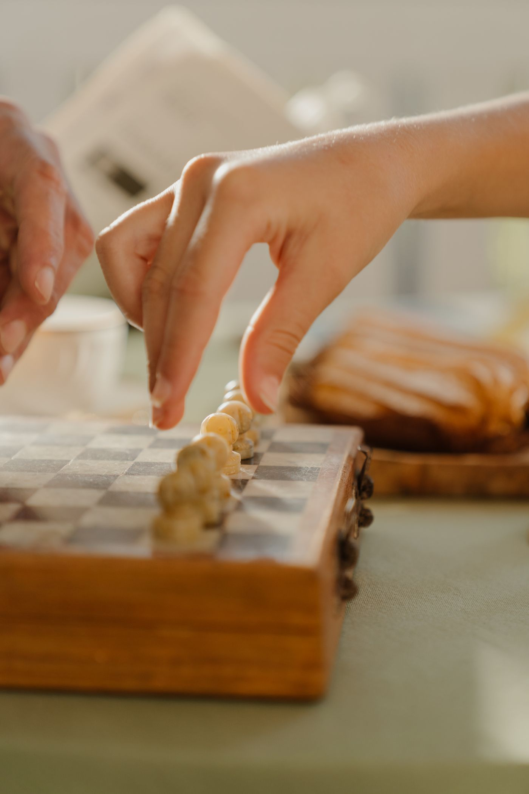
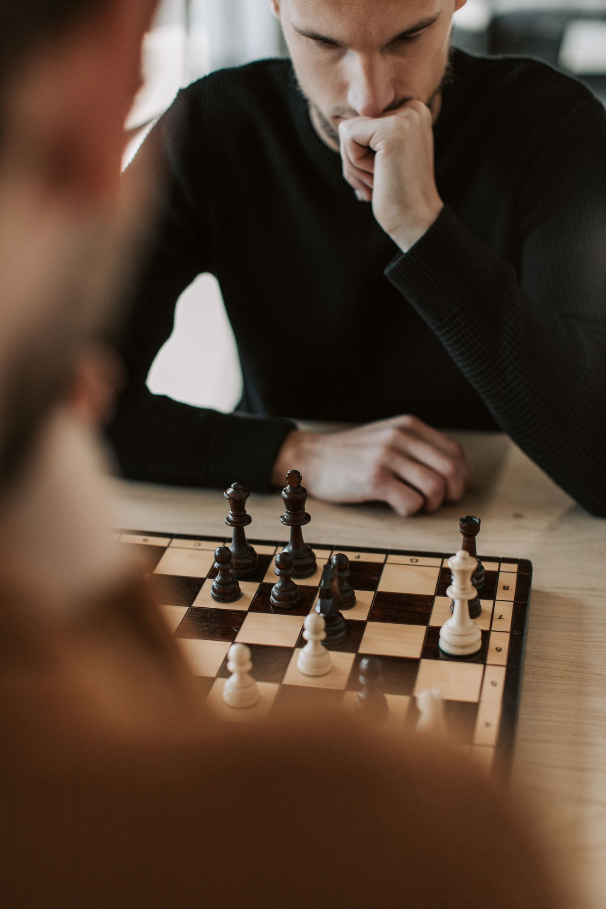
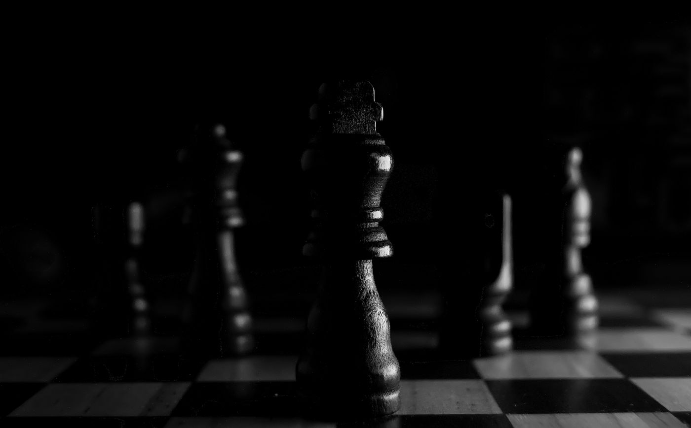

I hear a version of this all the time from parents of teenagers.
"He's fourteen. Isn't it too late?"
No. It isn't. Not even close. And honestly, I think middle school and high school might be one of the best times in a person's life to pick up this game.
Let me explain why.

Is my teenager too old to start playing chess?
No. There's a myth floating around that chess is something you have to start at five years old or forget about, and I understand where it comes from — the kids who become grandmasters usually did start that young. But that's a tiny sliver of the chess world, and it has almost nothing to do with your kid.
If your goal is for your teenager to be a world champion, sure, starting at fourteen is a real disadvantage. If your goal is for them to learn a game they can play and love for the next seventy years, fourteen is a great age. So is sixteen. So is forty.
I've watched middle schoolers walk into this club not knowing how a knight moves and, four months later, beat adults who've been playing casually for decades. It happens more than you'd think.
Why teenagers learn chess faster than little kids
Here's the part nobody talks about: older students have real advantages over the six-year-olds.
A fourteen-year-old can think in abstractions. They can hold a plan in their head across ten moves. They can look at a position, see three options, and reason through what happens after each one. That's not something a first grader can do, no matter how enthusiastic they are.
Teenagers can also study on their own. They can read a book, work through puzzles, review their own games and figure out where things went wrong. Little kids need everything handed to them one piece at a time. Older students can chase their own curiosity, and once a teenager gets curious about something, they move fast.
So no, they're not behind. They're just starting from a different place, with a different set of tools.
Does chess make teenagers smarter?
I want to be careful here, because there's a lot of overselling in the chess world. You have probably seen the claims — chess raises test scores, chess rewires the brain. I am not going to tell you that, and I want to show you why.
The largest review of the research is a 2016 meta-analysis by Giovanni Sala and Fernand Gobet, published in Educational Research Review, which pooled 24 studies. It found modest improvements in math and general cognitive ability among students who received chess instruction, and smaller ones in literacy. That sounds like good news, and it is — but the same researchers followed up in 2017 and found something important: the better-designed the study, the smaller the effect got. When chess was compared against another engaging activity rather than against nothing at all, most of the advantage disappeared.
Their honest conclusion, and mine: chess is a good use of a kid's time, but it is not a magic pill, and any activity that asks a teenager to concentrate hard for an hour a week probably does something similar.
Here is the one finding from that research I do think parents should know. The benefits scaled with the amount of training, and the researchers estimated roughly 25 to 30 hours — about one lesson a week across a school year — as the minimum before you would expect to see anything meaningful at all.
That is the real lesson. Not "chess makes kids smarter." Just: show up every week, and give it a year.

What chess actually gives a teenager
So here's what I'll claim instead — the things I see in this room, week after week.
They learn to sit with a hard problem. Common Sense Media's national census found that U.S. teenagers average roughly eight and a half hours a day of entertainment screen media, and CDC survey data has about half of 12-to-17-year-olds at four-plus hours daily. Nearly all of it is built to hand them something new every few seconds. Chess isn't. Chess asks them to sit in one position, uncomfortable and unsure, and think it through. That's a muscle, and it's getting harder to build anywhere else.
They learn to lose. This is the big one. Every game, somebody loses, and there's no ref to blame, no bad bounce, no teammate who missed the shot. It was your move. Own it, figure out why, come back next week. I've said this before and I'll say it again — permission to lose, a lot, is the whole point. The teenagers who get comfortable there grow up into adults who don't fall apart when something goes wrong.
They get a place to belong that isn't a team sport. Not every kid wants to play football. Some kids need a room where being thoughtful and a little bit competitive is the whole point, and where the other kids in the room are wired the same way. That room matters at this age more than almost anything.
It's genuinely social, and it's off a screen. Two people, a board, a couple of hours, no phones. You'd be amazed what teenagers talk about across a chessboard.
Does chess help with college applications?
Honestly? A little, and less than people claim.
If your teen competes in rated tournaments, earns a USCF rating, and stays with it for a few years, that's a legitimate extracurricular with measurable achievement attached to it. US Chess has over 100,000 members nationwide, and it runs national championships specifically for middle schoolers (the Barber) and high schoolers (the Denker), plus the Haring for girls in grades K–12. A record in events like those is concrete in a way most activities aren't, and far fewer kids have one.
But if the only reason your kid joins is to put a line on an application, they'll quit by November. The kids who stick with it are the ones who like it. The application benefit is a nice side effect, not the reason.
What about starting as a complete beginner?
That's most of them. Genuinely.
Our Middle & High School Recreational Chess League is built for exactly this — students who want to play, get better, and hang out with other kids their age, whether they've played a hundred games or zero. Recreational means what it sounds like. There's no tryout, no minimum rating, and nobody's getting cut.
I don't teach openings and memorization drills, either. I teach understanding — how to see the board, recognize patterns, and solve the position in front of you. Memorizing lines is a miserable way to learn a game, and it's the fastest way to make a teenager quit.

Chess for teens in Monterey County
For a long time, if you were a teenager in Carmel Valley, Carmel, Monterey, or Salinas who wanted to play chess with other people, your options were thin. Monterey County has had rated tournaments over the years — what it hasn't had, for decades, is a dedicated chess club where people can actually gather and play week to week. That's what we built here at 9 Del Fino Place.
Middle & High School Recreational Chess League
Thursdays at 3:15 PM · $120/month · all skill levels, beginners included · small groups
Carmel Valley Chess Club, 9 Del Fino Place, Suite 201, Carmel Valley, CA
We also host Family Chess Night once a month, which is a good low-commitment way for a curious teenager to try the game with a parent before signing up for anything.
Frequently asked questions
Is 13, 15, or 17 too old to start chess?
No. Teenagers learn chess quickly because they can think abstractly and study independently. Starting in middle or high school is fine for anyone who isn't aiming to become a professional player.
Does my teen need to know how to play before joining?
No. Our Thursday league welcomes complete beginners, and most students start with little or no experience.
How long does it take to get decent at chess as a teenager?
Most teens who play weekly can hold their own in a real game within a couple of months. Research on chess instruction suggests roughly a lesson a week across a school year before deeper benefits show up, so think in terms of a year, not a month.
Does playing chess improve grades?
The evidence is weaker than most people assume. Meta-analyses have found modest effects that shrink when chess is compared against other engaging activities. Chess is worth doing for its own sake, not as an academic shortcut.
Do they have to play in tournaments?
Not at all. The league is recreational. Tournaments are available for students who want them, and completely optional for everyone else.
If you've got a teenager who's curious about chess, or one who's never mentioned it but would probably love it, bring them by on a Thursday. They don't need to know a thing.
Pull up a chair.
— Coach JB
Carmel Valley Chess Club · cvchess.com
Bring Your Teen By on a Thursday
The Middle & High School Recreational Chess League meets Thursdays at 3:15 PM in Carmel Valley. All skill levels, beginners included. $120/month, small groups, no experience needed.
See the After-School Program →Sources: Sala, G. & Gobet, F. (2016), "Do the benefits of chess instruction transfer to academic and cognitive skills? A meta-analysis," Educational Research Review; Sala, G. & Gobet, F. (2017), "Does Far Transfer Exist? Negative Evidence From Chess, Music, and Working Memory Training," Current Directions in Psychological Science; Common Sense Media, Census: Media Use by Tweens and Teens; National Center for Health Statistics, "Daily Screen Time Among Teenagers"; US Chess (uschess.org).